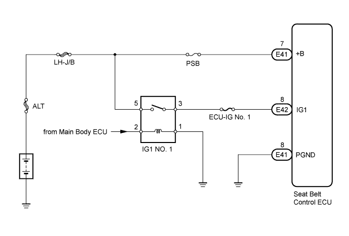
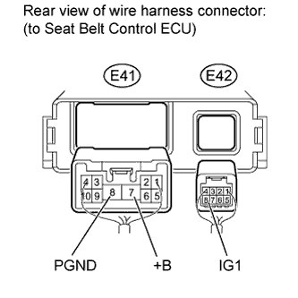

PRE-CRASH SAFETY SYSTEM > Power Source Circuit |

| 1.INSPECT FUSE (ECU-IG No. 1, PSB) |
Remove the ECU-IG No. 1 and PSB fuses from the main body ECU.
Measure the resistance according to the value(s) in the table below.
| Tester Connection | Condition | Specified Condition |
| ECU-IG No. 1 fuse | Always | Below 1 Ω |
| PSB fuse |
|
| ||||
| OK | |
| 2.CHECK HARNESS AND CONNECTOR (SEAT BELT CONTROL ECU - BATTERY AND BODY GROUND) |
 |
Disconnect the E41 and E42 seat belt control ECU connectors.
Measure the voltage according to the value(s) in the table below.
| Tester Connection | Switch Condition | Specified Condition |
| E42-8 (IG1) - Body ground | Engine switch on (IG) | 11 to 14 V |
| Engine switch off | Below 1 V | |
| E41-7 (+B) - Body ground | Always | 11 to 14 V |
Measure the resistance according to the value(s) in the table below.
| Tester Connection | Condition | Specified Condition |
| E41-8 (PGND) - Body ground | Always | Below 1 Ω |
| Result | Proceed to |
| OK (for LHD) | A |
| OK (for RHD) | B |
| NG | C |
|
| ||||
|
| ||||
| A | ||
| ||